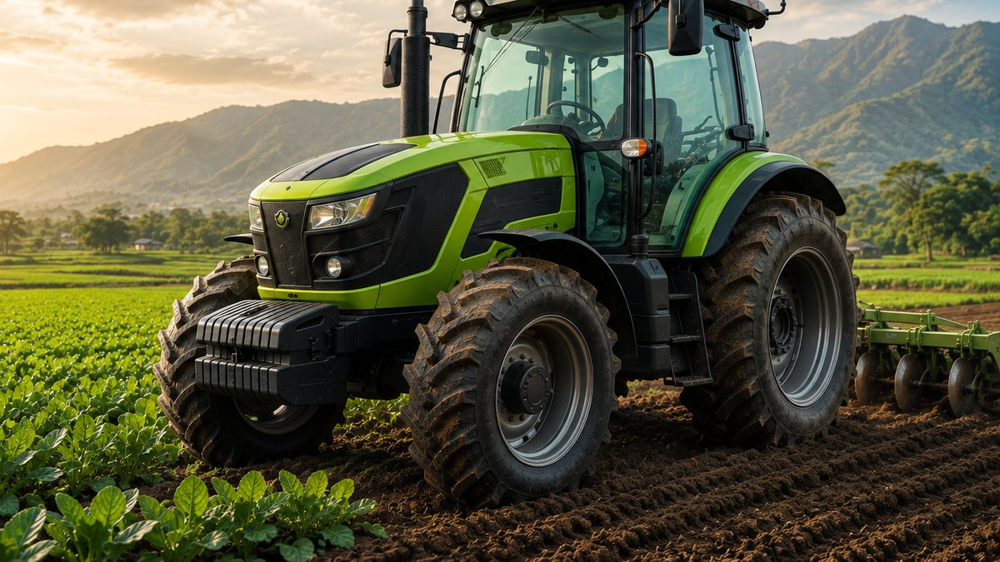

Kenali Jenis-Jenis dan Cara Pilih Ban Traktor yang Tepat
Pemilihan ban yang tepat dapat membantu meningkatkan daya cengkeram, dan penggunaan yang efektif.

Sedang membutuhkan ban traktor? Jangan salah pilih.
Sebagai kendaraan berat untuk pengerjaan tanah, traktor memiliki ban besar dengan material berkualitas tinggi untuk menopang performa dan stabilitas kerja di lapangan.
Pemilihan ban yang tepat dapat membantu meningkatkan daya cengkeram, dan penggunaan yang efektif. Karena itu, memahami cara pilih ban traktor adalah hal yang wajib dipahami pengguna dan pemilik traktor.
Pahami Jenis-Jenis Ban Traktor
Sebelum memilih ban, penting untuk tahu apa saja jenis-jenis ban traktor dengan karakteristik dan fungsi yang berbeda.
Ban R1
Tipe R1 merupakan tipe untuk ban ladang atau pertanian yang memiliki pola tapak dalam. Dilengkapi dengan lug yang kuat mencengkeram tanah, sehingga cocok di lahan kering.
Ban R2
Ban R2 hadir dengan pola tapak lebih dalam karena didesain untuk area berair atau berlumpur, seperti sawah. Memiliki kelebihan yakni traksi kuat di area tanah sangat basah.
Ban R3
Jenis yang satu ini disebut juga sebagai ban rumput yang cocok untuk lahan kering, seperti taman, lapangan golf, atau area dengan rumput. Traksi dengan ban ini lebih baik dan mudah saat bersentuhan pada material lepas, seperti kerikil.
Ban R4
Ban R4 biasa digunakan untuk pekerjaan konstruksi ringan maupun pertanian campuran. Terdiri dari tapak lebih lebar dan kuat, cocok di berbagai permukaan keras dan lunak.
Beberapa Cara Pilih Ban Traktor
Sesuaikan dengan Jenis Area
Sesuaikan pemilihan ban dengan kondisi lahan tempat traktor akan digunakan. Tiap tipe ban memiliki kegunaan dan karakteristik yang berbeda-beda. Jadi gunakan sesuai tipenya.
Perhatikan Ukuran Ban
Ukuran ban traktor umumnya dalam format seperti 14.9-24, yang menunjukkan lebar ban dan diameter pelek. Anda harus tahu ukuran ban yang dibutuhkan agar memiliki keseimbangan dan traksi tetap optimal.
Jika salah memilih ukuran, kekuatan daya cengkeram akan berkurang, suspensi rusak, dan konsumsi bahan bakar meningkat.
Cek Pola Tapak
Pola tapak berfungsi untuk melihat bagaimana ban mampu mencengkeram medan. Tapak dalam dan tajam bisa digunakan di tanah berlumpur. Sementara tapak lebar dan rapat sesuai untuk permukaan keras.
Pilih Material Berkualitas
Material ban tentu memengaruhi ketahanan penggunaan. Anda bisa memilih antara ban radial yang dikenal lebih fleksibel dan tahan panas, atau ban bias yang lebih kuat untuk area terjal, sehingga cocok untuk pekerjaan berat dengan traksi tinggi.
Bandingkan Harga dan Garansi
Pilih ban dari merek terpercaya dengan garansi resmi. Bandingkan juga harga dengan fitur dan ketahanan yang ditawarkan untuk memperoleh nilai terbaik.
Kesimpulan
Memilih ban traktor yang tepat bukan hanya soal harga, tapi juga kesesuaian dengan jenis lahan dan kebutuhan operasional. Dengan pemilihan ban yang tepat, traktor akan bekerja lebih efisien, tahan lama, dan aman digunakan di segala kondisi.
Butuh alat berat dengan suku cadang berkualitas? Di Diesel Agri Sukses Sejahtera semua ada.
Kami merupakan distributor resmi alat berat pertanian Zoomlion yang menyediakan berbagai produk alat berat, mulai dari perawatan, suku cadang, hingga inspeksi mesin lengkap.
Butuh saran? Hubungi kami.